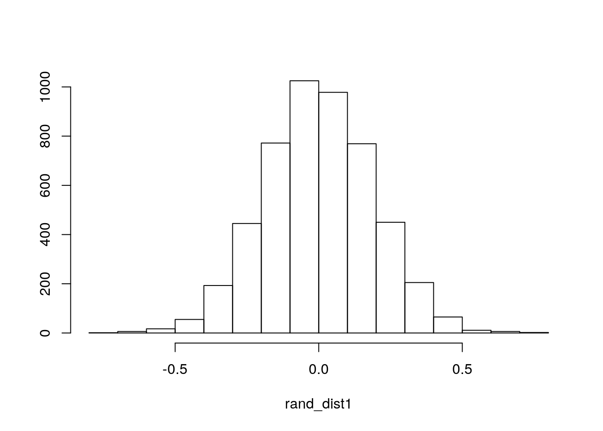
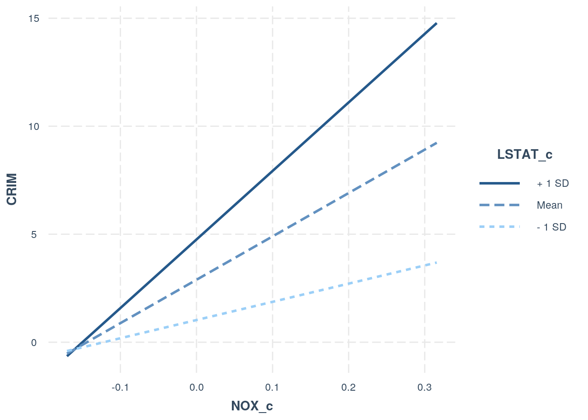
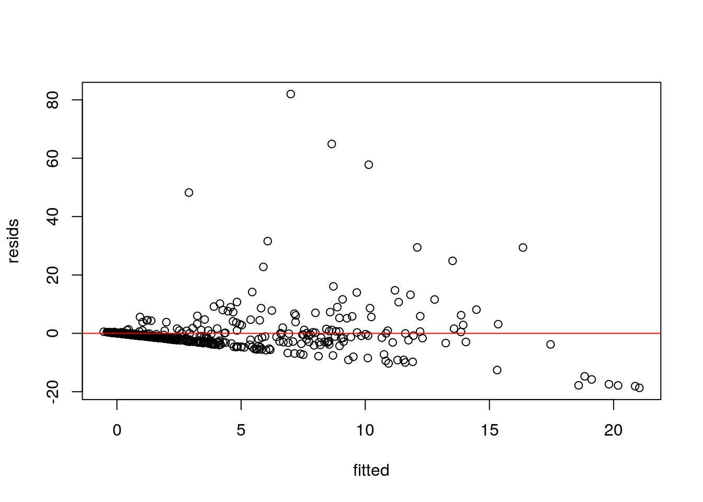
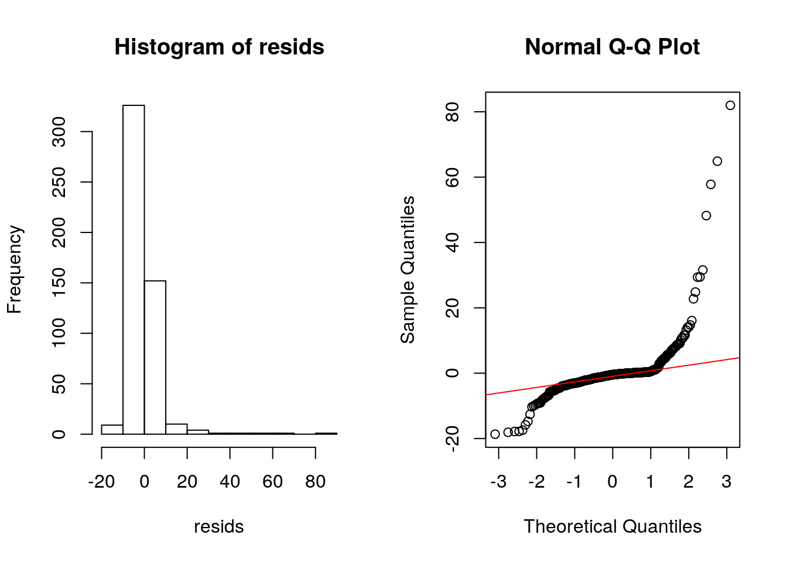
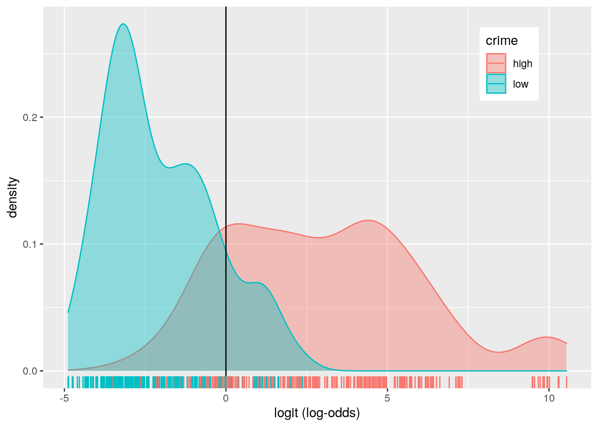
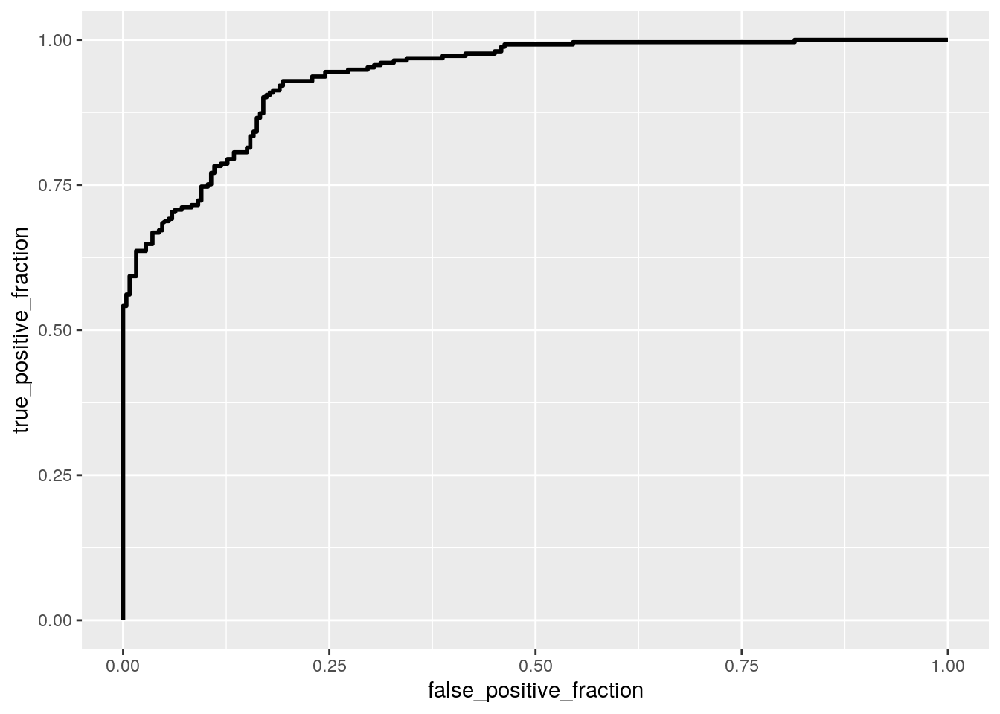

# import tidyverse
library(tidyverse)
# import dataset and summarize
data <- read.csv("/stor/home/yl33656/data.csv")
data <- data %>% na.omit()
data <- data %>% select(!c(CHAS, ZN, B, INDUS, TAX,
AGE, MEDV))
data <- data %>% mutate(NOX.rate = ifelse(data$NOX >=
0.55, "1", "0"))
data$crate[data$CRIM <= 0.08227] = "very low"
data$crate[data$CRIM > 0.08227 & data$CRIM <= 0.266] = "low"
data$crate[data$CRIM > 0.266 & data$CRIM <= 3.67708] = "high"
data$crate[data$CRIM > 3.67708] = "very high"
data$crime[data$CRIM > 0.266] = "high"
data$crime[data$CRIM <= 0.266] = "low"
summary(data)## CRIM NOX RM DIS
## Min. : 0.00632 Min. :0.3850 Min. :3.561 Min. : 1.130
## 1st Qu.: 0.08227 1st Qu.:0.4490 1st Qu.:5.886 1st Qu.: 2.099
## Median : 0.26600 Median :0.5380 Median :6.209 Median : 3.122
## Mean : 3.61740 Mean :0.5552 Mean :6.288 Mean : 3.775
## 3rd Qu.: 3.67708 3rd Qu.:0.6240 3rd Qu.:6.630 3rd Qu.: 5.118
## Max. :88.97620 Max. :0.8710 Max. :8.780 Max. :12.127
## RAD PTRATIO LSTAT NOX.rate
## Min. : 1.000 Min. :12.6 Min. : 1.73 Length:506
## 1st Qu.: 4.000 1st Qu.:17.4 1st Qu.: 6.95 Class :character
## Median : 5.000 Median :19.1 Median :11.46 Mode :character
## Mean : 9.532 Mean :18.5 Mean :12.87
## 3rd Qu.:24.000 3rd Qu.:20.2 3rd Qu.:17.11
## Max. :24.000 Max. :23.0 Max. :76.00
## crate crime
## Length:506 Length:506
## Class :character Class :character
## Mode :character Mode :character
##
##
## The dataset that I chose concerns housing values in suburbs of Boston. The reason I chose this dataset is that I wanted to do something related to the last project(crime rate in SF). I realized that it would be interesting to see how those variables for housing values in Boston have co-relation to the possibility of crimes. There are 506 rows and 10 columns after removing the NAs. CRIM is per capita crime rate by town. NOX is nitric oxides concentration (parts per 10 million). RM is average number of rooms per dwelling. DIS is weighted distances to five Boston employment centers. RAD is index of accessibility to radial highways. PTRATIO pupil-teacher ratio by town. LSTAT is percent of lower status of the population. crate is a categorical variable that if the crime rate by town is high, very high, low, or very low. NOX.rate is logical variable(1 means high nitrix oxides concentration rate, and 0 means low nitrix oxides concentration rate). Crime is the simplified version of crate, which has just high and low. I added this categorical variables and a logical variable to perform different kinds of tests later on this project.
library(rstatix)
# MANOVA - 1 test
man1 <- manova(cbind(NOX, RM, DIS, RAD, PTRATIO, LSTAT) ~
crate, data = data)
summary(man1)## Df Pillai approx F num Df den Df Pr(>F)
## crate 3 1.2935 63.038 18 1497 < 2.2e-16 ***
## Residuals 502
## ---
## Signif. codes: 0 '***' 0.001 '**' 0.01 '*' 0.05 '.' 0.1 ' ' 1# one way ANOVA(univariate ANOVAs) - 6 tests
summary.aov(man1)## Response NOX :
## Df Sum Sq Mean Sq F value Pr(>F)
## crate 3 3.9666 1.32220 238.48 < 2.2e-16 ***
## Residuals 502 2.7832 0.00554
## ---
## Signif. codes: 0 '***' 0.001 '**' 0.01 '*' 0.05 '.' 0.1 ' ' 1
##
## Response RM :
## Df Sum Sq Mean Sq F value Pr(>F)
## crate 3 25.891 8.6305 19.32 7.197e-12 ***
## Residuals 502 224.254 0.4467
## ---
## Signif. codes: 0 '***' 0.001 '**' 0.01 '*' 0.05 '.' 0.1 ' ' 1
##
## Response DIS :
## Df Sum Sq Mean Sq F value Pr(>F)
## crate 3 987.66 329.22 134.23 < 2.2e-16 ***
## Residuals 502 1231.23 2.45
## ---
## Signif. codes: 0 '***' 0.001 '**' 0.01 '*' 0.05 '.' 0.1 ' ' 1
##
## Response RAD :
## Df Sum Sq Mean Sq F value Pr(>F)
## crate 3 35116 11705.5 1806.1 < 2.2e-16 ***
## Residuals 502 3253 6.5
## ---
## Signif. codes: 0 '***' 0.001 '**' 0.01 '*' 0.05 '.' 0.1 ' ' 1
##
## Response PTRATIO :
## Df Sum Sq Mean Sq F value Pr(>F)
## crate 3 519.56 173.187 45.064 < 2.2e-16 ***
## Residuals 502 1929.26 3.843
## ---
## Signif. codes: 0 '***' 0.001 '**' 0.01 '*' 0.05 '.' 0.1 ' ' 1
##
## Response LSTAT :
## Df Sum Sq Mean Sq F value Pr(>F)
## crate 3 9168.9 3056.31 70.571 < 2.2e-16 ***
## Residuals 502 21740.9 43.31
## ---
## Signif. codes: 0 '***' 0.001 '**' 0.01 '*' 0.05 '.' 0.1 ' ' 1# post-hoc tests - 36 tests
pairwise.t.test(data$NOX, data$crate, p.adj = "none")##
## Pairwise comparisons using t tests with pooled SD
##
## data: data$NOX and data$crate
##
## high low very high
## low < 2e-16 - -
## very high 7.7e-16 < 2e-16 -
## very low < 2e-16 2.4e-05 < 2e-16
##
## P value adjustment method: nonepairwise.t.test(data$RM, data$crate, p.adj = "none")##
## Pairwise comparisons using t tests with pooled SD
##
## data: data$RM and data$crate
##
## high low very high
## low 0.0247 - -
## very high 1.1e-05 0.0289 -
## very low 0.0054 6.1e-07 1.5e-12
##
## P value adjustment method: nonepairwise.t.test(data$DIS, data$crate, p.adj = "none")##
## Pairwise comparisons using t tests with pooled SD
##
## data: data$DIS and data$crate
##
## high low very high
## low 6.5e-12 - -
## very high 3.7e-07 < 2e-16 -
## very low < 2e-16 1.6e-10 < 2e-16
##
## P value adjustment method: nonepairwise.t.test(data$RAD, data$crate, p.adj = "none")##
## Pairwise comparisons using t tests with pooled SD
##
## data: data$RAD and data$crate
##
## high low very high
## low 0.00023 - -
## very high < 2e-16 < 2e-16 -
## very low 6.7e-13 0.00028 < 2e-16
##
## P value adjustment method: nonepairwise.t.test(data$PTRATIO, data$crate, p.adj = "none")##
## Pairwise comparisons using t tests with pooled SD
##
## data: data$PTRATIO and data$crate
##
## high low very high
## low 0.04831 - -
## very high < 2e-16 5e-12 -
## very low 0.08274 0.00022 < 2e-16
##
## P value adjustment method: nonepairwise.t.test(data$LSTAT, data$crate, p.adj = "none")##
## Pairwise comparisons using t tests with pooled SD
##
## data: data$LSTAT and data$crate
##
## high low very high
## low 0.058 - -
## very high 6.4e-11 < 2e-16 -
## very low 7.0e-14 1.2e-08 < 2e-16
##
## P value adjustment method: none# Type I error
1 - (0.95)^43## [1] 0.8898169# bonferroni correction
alpha = 0.05/43
alpha## [1] 0.001162791# MANOVA Assumptions
group <- data$crate
DVs <- data %>% select(!c(crate, CRIM, NOX.rate, crime))
# Test multivariate normality for each group (null:
# assumption met)
sapply(split(DVs, group), mshapiro_test)## high low very high very low
## statistic 0.6552919 0.8931587 0.09123633 0.9530275
## p.value 8.712089e-16 4.985417e-08 1.569736e-24 0.0002345151# If any p<.05, stop (assumption violated). If not,
# test homogeneity of covariance matricesI performed MANOVA with 6 response variables which are NOX, RM, DIS, RAD, PTRATIO, LASTAT to find if any of those differ by the criminal rate(crate). Overall MANOVA is significant which means all variables differ by criminal rate(crate). Therefore, I performed follow up one-way ANOVA for each variable. I also performed post-hoc tests with those variables. In total, I used 43 hypothesis tests which comprised of 1 MANOVA, 6 ANOVA, and 36 post-hoc tests. Thus the type I error is 0.8898169, and in order to keep the overall type I error rate at 0.05, the Boneferroni adjusted significance level is 0.001162791. Using this adjusted alpha, p-values of RM, PTRATIO, and LSTAT in post-hoc tests turned out not significant, but besides that all of MANOVA, and ANOVA are significant with the adjusted alpha. For the MANOVA Assumptions, multivariate normality for each group is violated due to their significant p-values(p_value<0.05).
set.seed(348)
# randomization test
data %>% group_by(NOX.rate) %>% summarize(means = mean(DIS)) %>%
summarize(mean_diff = diff(means))## # A tibble: 1 x 1
## mean_diff
## <dbl>
## 1 -3.02rand_dist1 <- vector()
for (i in 1:5000) {
new <- data.frame(DIS = sample(data$DIS), NOX.rate = data$NOX.rate)
rand_dist1[i] <- mean(new[new$NOX.rate == 0, ]$DIS) -
mean(new[new$NOX.rate == 1, ]$DIS)
}
# plot the randomization test
{
hist(rand_dist1, main = "", ylab = "")
abline(v = c(-3.021828, 3.021828), col = "red")
}
# two tailed p-value test
mean(rand_dist1 > 3.021828 | rand_dist1 < -3.021828)## [1] 0# t-test
t.test(data = data, DIS ~ NOX.rate)##
## Welch Two Sample t-test
##
## data: DIS by NOX.rate
## t = 25.91, df = 343.97, p-value < 2.2e-16
## alternative hypothesis: true difference in means is not equal to 0
## 95 percent confidence interval:
## 2.792431 3.251226
## sample estimates:
## mean in group 0 mean in group 1
## 5.071153 2.049325I performed randomization test on weighted distances to five Boston employment centers(DIS). The null hypothesis is that mean DIS is the same for high(1) vs. low(0) nitric oxides concentration, and the alternate hypothesis is that mean DIS is different for high(1) vs. low(0) nitric oxides concentration. The randomization test shows that there are significant difference in DIS between high and low nitric oxides concentration because the two tailed pvalue is 0(none of the 5000 mean difference statistics generated under the null hypothesis were outside of the mean difference range). Therefore, I can reject the null hypothesis for the randomization test because the p-value is less than 0.05, which gives the same results as the t-test.
Build a linear regression model predicting one of your response variables from at least 2 other variables, including their interaction. Mean-center any numeric variables involved in the interaction.
ggplot() using geom_smooth(method="lm"). If your interaction is numeric by numeric, refer to code in the slides to make the plot or check out the interactions package, which makes this easier. If you have 3 or more predictors, just chose two of them to plot for convenience. (8)coeftest(..., vcov=vcovHC(...)). Discuss significance of results, including any changes from before/after robust SEs if applicable. (8)library(stats)
library(lmtest)
library(sandwich)
library(interactions)
# centering predictor variables
data$NOX_c <- data$NOX - mean(data$NOX)
data$LSTAT_c <- data$LSTAT - mean(data$LSTAT)
# build a linear regression model (interaction
# between NOC_c and LSTAT_c)
fit <- lm(CRIM ~ NOX_c * LSTAT_c, data = data)
summary(fit)##
## Call:
## lm(formula = CRIM ~ NOX_c * LSTAT_c, data = data)
##
## Residuals:
## Min 1Q Median 3Q Max
## -18.669 -2.094 -0.447 0.202 81.979
##
## Coefficients:
## Estimate Std. Error t value Pr(>|t|)
## (Intercept) 2.89048 0.39470 7.323 9.70e-13 ***
## NOX_c 20.08305 3.45221 5.817 1.07e-08 ***
## LSTAT_c 0.23826 0.05213 4.570 6.13e-06 ***
## NOX_c:LSTAT_c 1.48977 0.43010 3.464 0.000578 ***
## ---
## Signif. codes: 0 '***' 0.001 '**' 0.01 '*' 0.05 '.' 0.1 ' ' 1
##
## Residual standard error: 7.52 on 502 degrees of freedom
## Multiple R-squared: 0.24, Adjusted R-squared: 0.2355
## F-statistic: 52.86 on 3 and 502 DF, p-value: < 2.2e-16# visualize interaction/plot the regression
interact_plot(fit, NOX_c, LSTAT_c)
# check assumptions
resids <- lm(CRIM ~ NOX_c * LSTAT_c, data = data)$residuals
fitted <- lm(CRIM ~ NOX_c * LSTAT_c, data = data)$fitted.values
plot(fitted, resids)
abline(h = 0, col = "red")
par(mfrow = c(1, 2))
hist(resids)
qqnorm(resids)
qqline(resids, col = "red")
ks.test(resids, "pnorm", mean = 0, sd(resids))##
## One-sample Kolmogorov-Smirnov test
##
## data: resids
## D = 0.31447, p-value < 2.2e-16
## alternative hypothesis: two-sidedbptest(fit)##
## studentized Breusch-Pagan test
##
## data: fit
## BP = 15.611, df = 3, p-value = 0.001362# robust standard errors
coeftest(fit, vcov = vcovHC(fit))##
## t test of coefficients:
##
## Estimate Std. Error t value Pr(>|t|)
## (Intercept) 2.890475 0.399426 7.2366 1.734e-12 ***
## NOX_c 20.083050 3.993125 5.0294 6.861e-07 ***
## LSTAT_c 0.238260 0.080854 2.9468 0.00336 **
## NOX_c:LSTAT_c 1.489771 0.667278 2.2326 0.02601 *
## ---
## Signif. codes: 0 '***' 0.001 '**' 0.01 '*' 0.05 '.' 0.1 ' ' 1# proportion of variation
sum((fitted - mean(data$CRIM))^2)/sum((data$CRIM -
mean(data$CRIM))^2)## [1] 0.2400469The intercept shows that predicted CRIM(per capita crime rate by town) for an average NOX(NO concentration) and average LSTAT(percent of lower status of the population) is 2.89048. NOX_c shows that controlling for LSTAT_c status, for every 1-unit increase in NOX_c, CRIM increases 20.08305 on average. LSTAT_c shows that controlling for NOX_c status, for every 1-unit increase in LSTAT_c, CRIM increases 0.23826. NOX_c:LSTAT_c coefficient is hard to describe because both of the predictor variables are continuous. Therefore, I created a plot that shows the effect of the interaction on crime rate. The plot shows that compared to mean LSTAT, high LSTAT(LSTAT) increases the rate of crime as the NO concentration(NOX) increases.
The plot of residuals shows that the regression does not have linear relationship between y and x(linearity failed). Eyeballing histogram of residuals and QQ plot, the regression rejects the null hypothesis which means that the regression is not normally distributed. Also the plot for regression shows that it does not have equal variance of points along regression line, which means it does not meet homoskedaticity. I double checked homeskedasticity with bp-test, and I had to reject the null hypothesis, which means the regression is not homoskedastic. Because the all assumptions for linear regression has been violated, I should use bootstrap standard errors.
Computing robust standard errors gives overall similar coefficient estimates and standard errors. However, in general all of the coefficients became less significant(still significant!). For the adjusted regression, the intercept shows that predicted CRIM(per capita crime rate by town) for an average NOX(NO concentration) and average LSTAT(percent of lower status of the population) is 2.890475, and it is significant because its p-value is 1.734e-12(p<0.05). The new NOX_c shows that controlling for LSTAT_c status, for every 1-unit increase in NOX_c, CRIM increases 20.083050 on average, and it is significant because its p-value is 6.861e-07(<0.05). LSTAT_c shows that controlling for NOX_c status, for every 1-unit increase in LSTAT_c, CRIM increases 0.238260, and it is also significant because its p-value is 0.00336(<0.05). NOX_c:LSTAT_c shows that the effect of NOX_c on CRIM(crime rate) is different for different values of LSTAT_c, which is significant because of its p-value(0.02601<.05). The proportion of variation in the response variable explained by the overall model is 0.2400469. It means that 2.4% of variability in CRIM is explained.
# bootstrapped standard errors by re-sampling
# residuals
fit2 <- lm(CRIM ~ NOX_c * LSTAT_c, data = data)
resids <- fit2$residuals
fitted <- fit2$fitted.values
resid_resamp <- replicate(5000, {
new_resids <- sample(resids, replace = TRUE)
data$new_y <- fitted + new_resids
fit2 <- lm(new_y ~ NOX_c * LSTAT_c, data = data)
coef(fit2)
})
# comparing SE
resid_resamp %>% t %>% as.data.frame %>% summarize_all(sd)## (Intercept) NOX_c LSTAT_c NOX_c:LSTAT_c
## 1 0.3978324 3.519888 0.05256753 0.4356942coeftest(fit, vcov = vcovHC(fit))##
## t test of coefficients:
##
## Estimate Std. Error t value Pr(>|t|)
## (Intercept) 2.890475 0.399426 7.2366 1.734e-12 ***
## NOX_c 20.083050 3.993125 5.0294 6.861e-07 ***
## LSTAT_c 0.238260 0.080854 2.9468 0.00336 **
## NOX_c:LSTAT_c 1.489771 0.667278 2.2326 0.02601 *
## ---
## Signif. codes: 0 '***' 0.001 '**' 0.01 '*' 0.05 '.' 0.1 ' ' 1coeftest(fit)##
## t test of coefficients:
##
## Estimate Std. Error t value Pr(>|t|)
## (Intercept) 2.89047 0.39470 7.3232 9.705e-13 ***
## NOX_c 20.08305 3.45221 5.8174 1.065e-08 ***
## LSTAT_c 0.23826 0.05213 4.5705 6.133e-06 ***
## NOX_c:LSTAT_c 1.48977 0.43010 3.4638 0.0005782 ***
## ---
## Signif. codes: 0 '***' 0.001 '**' 0.01 '*' 0.05 '.' 0.1 ' ' 1In order of bootstrapped standard errors by re-sampling residuals, the robust standard errors, and the original standard errors, the standard error of NOX_c has changed 3.519888 -> 3.993125 -> 3.45221, the standard error of LSTAT_c has changed 0.05256753 -> 0.080854 -> 0.05213, the SE of NOX_c:LSTAT_c has changed 0.4356942 -> 0.667278 -> 0.43010. Overall, the original SE has the lowest values, and then bootstrapped SE, and for the largest one it was the robust SEs. The p-value has the same trend as the SEs' trend. In conclusion, the most significant coefficients would be from the bootstrapped model, and second would be the original, and the least significant one would be the robust SE model.
Fit a logistic regression model predicting a binary variable (if you don’t have one, make/get one) from at least two explanatory variables (interaction not necessary).
library(stats)
library(plotROC)
data <- data %>% mutate(y = ifelse(crime == "high",
1, 0))
# logsitic regression
fit3 <- glm(y ~ NOX + RM, data = data, family = "binomial")
coeftest(fit3)##
## z test of coefficients:
##
## Estimate Std. Error z value Pr(>|z|)
## (Intercept) -21.04927 2.52115 -8.3491 < 2.2e-16 ***
## NOX 31.33745 2.88569 10.8596 < 2.2e-16 ***
## RM 0.66023 0.22872 2.8867 0.003893 **
## ---
## Signif. codes: 0 '***' 0.001 '**' 0.01 '*' 0.05 '.' 0.1 ' ' 1# confusion matrix
probs <- predict(fit3, type = "response")
table(predict = as.numeric(probs > 0.5), truth = data$y) %>%
addmargins## truth
## predict 0 1 Sum
## 0 218 49 267
## 1 35 204 239
## Sum 253 253 506# Accuracy
(218 + 204)/506## [1] 0.8339921# specificity
204/239## [1] 0.8535565# Sensitivity
218/253## [1] 0.8616601# Precision
204/239## [1] 0.8535565# AUC
class_diag(probs, data$y)## acc sens spec ppv f1 auc
## 1 0.8339921 0.8063241 0.8616601 0.8535565 0.8292683 0.9380322# density plot
data$logit <- predict(fit3, type = "link")
data %>% ggplot() + geom_density(aes(logit, color = crime,
fill = crime), alpha = 0.4) + theme(legend.position = c(0.85,
0.85)) + geom_vline(xintercept = 0) + xlab("logit (log-odds)") +
geom_rug(aes(logit, color = crime))
# plot roc curve
ROCplot <- ggplot(data) + geom_roc(aes(d = y, m = probs),
n.cuts = 0)
ROCplot
calc_auc(ROCplot)## PANEL group AUC
## 1 1 -1 0.9380322Controlling average room number per dwelling(RM), every unit increase of NOX(NO concentration) makes the odds of having high crime rate increases by 31.33745. Controlling NOX, every unit increase of RM makes the odds of having crime rate increases by 0.66023. Both of the relationships are significant due to its p-value(2.2e-16<0.05).
Using the confusion matrix, we can figure out that Accuracy(overall the proportion of correctly classified samples) is (218+204)/506=0.8339921; Sensitivity(true positive rate = probability of detecting high crime rate if the sample really has the high crime rate) is 218/253 = 0.8616601; Specificity(true negative rate=probability of a high crime rate for the low crime rate samples) is 204/239 = 0.8535565, which means it is very bad at predicting ; Precision(the proportion classified high crime rate which actually are) is 204/239= 0.8535565. Its AUC is considered as 'Good' according to the 'Rules of thumb for AUC'. Using, the function class_diag(), we can calculate AUC which is 0.8535565. From the ROC plot, the computed AUC is 0.9380322. With the result I can say that the probability that a randomly selected house that has high crime rate has a higher predicted probability than a randomly selected sample that has low crime rate. The value of AUC is considered as 'great' at predicting if the criminal rate is high or low according to the Rules of thumb for AUC.
Perform a logistic regression predicting the same binary response variable from ALL of the rest of your variables (the more, the better!)
lambda.1se). Discuss which variables are retained. (5)# code here
library(base)
library(glmnet)
# fit model, compute class_diag
fit4 <- glm(y ~ NOX + RM + DIS + RAD + PTRATIO + LSTAT,
data = data, family = "binomial")
coeftest(fit4)##
## z test of coefficients:
##
## Estimate Std. Error z value Pr(>|z|)
## (Intercept) -32.951350 4.956692 -6.6479 2.974e-11 ***
## NOX 35.647396 5.271611 6.7621 1.360e-11 ***
## RM 1.006852 0.325363 3.0945 0.001971 **
## DIS 0.318481 0.143114 2.2254 0.026057 *
## RAD 0.504427 0.106860 4.7204 2.353e-06 ***
## PTRATIO 0.166022 0.081078 2.0477 0.040591 *
## LSTAT 0.042622 0.031141 1.3687 0.171093
## ---
## Signif. codes: 0 '***' 0.001 '**' 0.01 '*' 0.05 '.' 0.1 ' ' 1probs <- predict(fit4, type = "response")
class_diag(probs, data$y)## acc sens spec ppv f1 auc
## 1 0.8853755 0.8379447 0.9328063 0.9257642 0.879668 0.9596307# 10-fold CV
set.seed(1234)
k = 10
dat <- data %>% sample_frac
folds <- ntile(1:nrow(dat), n = 10)
diags <- NULL
for (i in 1:k) {
train <- dat[folds != i, ]
test <- dat[folds == i, ]
truth <- test$y
fit5 <- glm(y ~ NOX + RM + DIS + RAD + PTRATIO +
LSTAT, data = train, family = "binomial")
probs <- predict(fit5, newdata = test, type = "response")
diags <- rbind(diags, class_diag(probs, truth))
}
summarize_all(diags, "mean")## acc sens spec ppv f1 auc
## 1 0.8654902 0.8365009 0.8913777 0.8916097 0.8599816 0.9521892# LASSO
y1 <- as.matrix(data$y)
crime_preds <- model.matrix(y ~ NOX + RM + DIS + RAD +
PTRATIO + LSTAT, data = data)[, -1]
cv <- cv.glmnet(crime_preds, y1, family = "binomial")
lasso_fit <- glmnet(crime_preds, y1, family = "binomial",
lambda = cv$lambda.1se)
coef(lasso_fit)## 7 x 1 sparse Matrix of class "dgCMatrix"
## s0
## (Intercept) -16.29998005
## NOX 21.24701787
## RM 0.44195675
## DIS .
## RAD 0.18117417
## PTRATIO 0.03901674
## LSTAT 0.01380450# 10-fold cv
k = 10
dat <- data %>% sample_frac
folds <- ntile(1:nrow(dat), n = 10)
diags <- NULL
for (i in 1:k) {
train <- dat[folds != i, ]
test <- dat[folds == i, ]
truth <- test$y
fit5 <- glm(y ~ NOX + RM + RAD + PTRATIO + LSTAT,
data = train, family = "binomial")
probs <- predict(fit5, newdata = test, type = "response")
diags <- rbind(diags, class_diag(probs, truth))
}
summarize_all(diags, "mean")## acc sens spec ppv f1 auc
## 1 0.8675294 0.8337428 0.9011872 0.8946755 0.861892 0.9558745After fitting a model, I computed in sample classification diagnostics(Accuracy = 0.8853755, Sensitivity = 0.8379447, Specificity = 0.9328063, precision = 0.9257642, and AUC = 0.9596307). The original model has 'great' level of AUC. After 10-fold CV, I computed out of sample classification diagnostics(Accuracy = 0.8654902, Sensitivity = 0.8365009, Specificity = 0.8913777, precision = 0.8916097, and AUC = 0.9521892). Comparing the in sample model with the out of sample model, because in sample model has higher AUC than that of the out of sample model, in sample model is better at predicting high or low crime rate. I performed LASSO, and found out that except for DIS all the other variables(NOX+RM+RAD+PTRATIO+LSTAT) are non zeros which means they need to be retained. When I ran 10-fold CV with the variables that are retained, compared to the full out of sample model, the accuracy increased from 0.8654902 to 0.8675294, sensibility decreased from 0.8365009 to 0.8337428, specificity increased from 0.8913777 to 0.9011872, precision increased from 0.8916097 to 0.8946755, and lastly AUC increased from 0.9521892 to 0.9558745. In conclusion, the adjusted out of sample model is better at predicting high or low crime rate than the full out of sample model.
Note that the echo = FALSE parameter was added to the code chunk to prevent printing of the R code that generated the plot.
## R version 3.6.1 (2019-07-05)
## Platform: x86_64-pc-linux-gnu (64-bit)
## Running under: Ubuntu 18.04.5 LTS
##
## Matrix products: default
## BLAS: /stor/system/opt/R/R-3.6.1/lib/R/lib/libRblas.so
## LAPACK: /stor/system/opt/R/R-3.6.1/lib/R/lib/libRlapack.so
##
## locale:
## [1] LC_CTYPE=en_US.UTF-8 LC_NUMERIC=C
## [3] LC_TIME=en_US.UTF-8 LC_COLLATE=en_US.UTF-8
## [5] LC_MONETARY=en_US.UTF-8 LC_MESSAGES=en_US.UTF-8
## [7] LC_PAPER=en_US.UTF-8 LC_NAME=C
## [9] LC_ADDRESS=C LC_TELEPHONE=C
## [11] LC_MEASUREMENT=en_US.UTF-8 LC_IDENTIFICATION=C
##
## attached base packages:
## [1] stats graphics grDevices utils datasets methods base
##
## other attached packages:
## [1] glmnet_4.0-2 Matrix_1.2-17 plotROC_2.2.1 interactions_1.1.3
## [5] sandwich_3.0-0 lmtest_0.9-38 zoo_1.8-8 rstatix_0.6.0
## [9] forcats_0.5.0 stringr_1.4.0 dplyr_1.0.1 purrr_0.3.4
## [13] readr_1.3.1 tidyr_1.1.1 tibble_3.0.3 ggplot2_3.3.2
## [17] tidyverse_1.3.0
##
## loaded via a namespace (and not attached):
## [1] fs_1.5.0 lubridate_1.7.9 httr_1.4.2 tools_3.6.1
## [5] backports_1.1.8 utf8_1.1.4 R6_2.4.1 DBI_1.1.0
## [9] colorspace_1.4-1 withr_2.2.0 tidyselect_1.1.0 curl_4.3
## [13] compiler_3.6.1 cli_2.0.2 rvest_0.3.6 formatR_1.7
## [17] xml2_1.3.2 labeling_0.3 bookdown_0.20 scales_1.1.1
## [21] digest_0.6.25 foreign_0.8-71 rmarkdown_2.5 rio_0.5.16
## [25] pkgconfig_2.0.3 htmltools_0.5.0 dbplyr_1.4.4 rlang_0.4.7
## [29] readxl_1.3.1 rstudioapi_0.11 shape_1.4.5 farver_2.0.3
## [33] generics_0.0.2 jsonlite_1.7.0 zip_2.1.0 car_3.0-8
## [37] magrittr_1.5 Rcpp_1.0.5 munsell_0.5.0 fansi_0.4.1
## [41] abind_1.4-5 lifecycle_0.2.0 stringi_1.5.3 yaml_2.2.1
## [45] carData_3.0-4 plyr_1.8.6 grid_3.6.1 blob_1.2.1
## [49] crayon_1.3.4 lattice_0.20-41 haven_2.3.1 splines_3.6.1
## [53] jtools_2.1.0 pander_0.6.3 hms_0.5.3 knitr_1.29
## [57] pillar_1.4.6 codetools_0.2-16 reprex_0.3.0 glue_1.4.2
## [61] evaluate_0.14 blogdown_0.20 data.table_1.13.0 modelr_0.1.8
## [65] vctrs_0.3.2 foreach_1.5.0 cellranger_1.1.0 gtable_0.3.0
## [69] assertthat_0.2.1 xfun_0.19 openxlsx_4.1.5 broom_0.7.0
## [73] survival_3.2-3 iterators_1.0.12 ellipsis_0.3.1## [1] "2020-12-07 20:51:01 CST"## sysname
## "Linux"
## release
## "4.15.0-117-generic"
## version
## "#118-Ubuntu SMP Fri Sep 4 20:02:41 UTC 2020"
## nodename
## "educcomp01.ccbb.utexas.edu"
## machine
## "x86_64"
## login
## "unknown"
## user
## "yl33656"
## effective_user
## "yl33656"